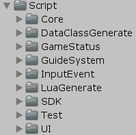
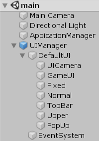

简述
该框架是一个比较老旧的框架了，查看其Github会发现上一次更新已经是2020年了，但整体来说也不算太过久远
简单看一下框架目录：

其中Core是核心部分，查看每一部分(Application/Audio/...)，会发现是
框架
对于该框架，可以说简单到没有框架了，查看其示例项目main：

可以看到程序部分由ApplicationManager中的ApplicationManager.cs管理
而UI部分由UIManager中的UIManager.cs/UIAnimManager.cs/UILayerManager.cs/UIStackManager.cs管理
ApplicationManager
对于Manager来说，该框架使用的是最简单的
private static ApplicationManager instance;
public static ApplicationManager Instance
{
get {
if (instance == null)
{
instance = FindObjectOfType<ApplicationManager>();
}
return ApplicationManager.instance; }
set { ApplicationManager.instance = value; }
}
对于该最大的Manager中启动流程Awake是至关重要的：
public void Awake()
{
//Debug.Log("persistentDataPath:" + Application.persistentDataPath);
instance = this;
if (Application.platform != RuntimePlatform.WindowsEditor &&
Application.platform != RuntimePlatform.OSXEditor)
{
try
{
string modeStr = PlayerPrefs.GetString("AppMode", m_AppMode.ToString());
m_AppMode = (AppMode)Enum.Parse(typeof(AppMode), modeStr);
}
catch (Exception e)
{
Debug.LogError(e);
}
}
AppLaunch();
}
public void AppLaunch()
{
DontDestroyOnLoad(gameObject);
Application.runInBackground = true;
Screen.sleepTimeout = SleepTimeout.NeverSleep;
SetResourceLoadType(useCacheWhenLoadResource); //设置资源加载类型
AudioPlayManager.Init();
MemoryManager.Init(); //内存管理初始化
Timer.Init(); //计时器启动
InputManager.Init(); //输入管理器启动
#if !UNITY_WEBGL
UIManager.Init(); //UIManager启动
#else
UIManager.InitAsync(); //异步加载UIManager
#endif
ApplicationStatusManager.Init(); //游戏流程状态机初始化
GlobalLogicManager.Init(); //初始化全局逻辑
if (AppMode != AppMode.Release)
{
GUIConsole.Init(); //运行时Console
DevelopReplayManager.OnLunchCallBack += () =>
{
SDKManager.Init(); //初始化SDKManger
#if USE_LUA
LuaManager.Init();
#endif
InitGlobalLogic(); //全局逻辑
ApplicationStatusManager.EnterTestModel(m_Status);//可以从此处进入测试流程
};
DevelopReplayManager.Init(m_quickLunch); //开发者复盘管理器
LanguageManager.Init();
}
else
{
Log.Init(false); //关闭 Debug
SDKManager.Init(); //初始化SDKManger
#if USE_LUA
LuaManager.Init();
#endif
InitGlobalLogic(); //全局逻辑
ApplicationStatusManager.EnterStatus(m_Status);//游戏流程状态机，开始第一个状态
LanguageManager.Init();
}
if (s_OnApplicationModuleInitEnd != null)
{
s_OnApplicationModuleInitEnd();
}
}
可以看到简单来说就是
所以我说这个框架并不能算严格意义上的框架
另一点是生命周期事件回调：
public delegate void ApplicationBoolCallback(bool status);
public delegate void ApplicationVoidCallback();
public static ApplicationVoidCallback s_OnApplicationModuleInitEnd = null;
public static ApplicationVoidCallback s_OnApplicationQuit = null;
public static ApplicationBoolCallback s_OnApplicationPause = null;
public static ApplicationBoolCallback s_OnApplicationFocus = null;
public static ApplicationVoidCallback s_OnApplicationUpdate = null;
public static ApplicationVoidCallback s_OnApplicationFixedUpdate = null;
public static ApplicationVoidCallback s_OnApplicationOnGUI = null;
public static ApplicationVoidCallback s_OnApplicationOnDrawGizmos = null;
public static ApplicationVoidCallback s_OnApplicationLateUpdate = null;
void OnApplicationQuit()
{
if (s_OnApplicationQuit != null)
{
try
{
s_OnApplicationQuit();
}
catch (Exception e)
{
Debug.LogError(e.ToString());
}
}
}
void OnApplicationPause(bool pauseStatus)
{
if (s_OnApplicationPause != null)
{
try
{
s_OnApplicationPause(pauseStatus);
}
catch (Exception e)
{
Debug.LogError(e.ToString());
}
}
}
void OnApplicationFocus(bool focusStatus)
{
if (s_OnApplicationFocus != null)
{
try
{
s_OnApplicationFocus(focusStatus);
}
catch (Exception e)
{
Debug.LogError(e.ToString());
}
}
}
void Update()
{
if (s_OnApplicationUpdate != null)
s_OnApplicationUpdate();
}
private void LateUpdate()
{
if (s_OnApplicationLateUpdate != null)
{
s_OnApplicationLateUpdate();
}
}
private void FixedUpdate()
{
if (s_OnApplicationFixedUpdate != null)
s_OnApplicationFixedUpdate();
}
void OnGUI()
{
if (s_OnApplicationOnGUI != null)
s_OnApplicationOnGUI();
}
private void OnDrawGizmos()
{
if (s_OnApplicationOnDrawGizmos != null)
s_OnApplicationOnDrawGizmos();
}
可以看到本质上仅是一个delegate，会在需要时添加而已
public static void Init()
{
ApplicationManager.s_OnApplicationUpdate += Update;
}
UIManager
UIManager本质上管理着其它几个Manager：
public class UIManager : MonoBehaviour
{
private static UILayerManager s_UILayerManager; //UI层级管理器
private static UIAnimManager s_UIAnimManager; //UI动画管理器
private static UIStackManager s_UIStackManager; //UI栈管理器
// ...
}
看似UIManager独立于ApplicationManager(因为需要挂载)，但事实并不如此：
UIManager依旧出现在ApplicationManager.Awake的启动流程中
之所以这样是因为：
总结
该框架是极易的框架，对于框架部分并无任何体系可言，但只要保证流程正确其实也就足够了